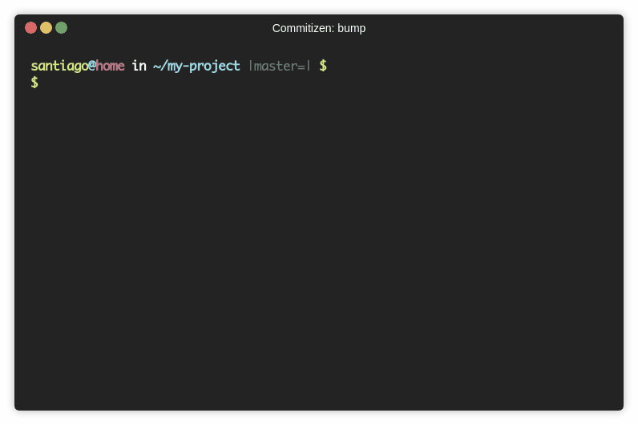

Bump

About
The version is bumped automatically based on the commits.
The commits should follow the rules of the committer to be parsed correctly.
It is possible to specify a prerelease (alpha, beta, release candidate) version.
The version can also be manually bumped.
The version format follows semantic versioning.
This means MAJOR.MINOR.PATCH
| Increment | Description | Conventional commit map |
|---|---|---|
MAJOR |
Breaking changes introduced | BREAKING CHANGE |
MINOR |
New features | feat |
PATCH |
Fixes | fix + everything else |
Prereleases are supported following python's PEP 0440
The scheme of this format is
[N!]N(.N)*[{a|b|rc}N][.postN][.devN]
Some examples:
0.9.0
0.9.1
0.9.2
0.9.10
0.9.11
1.0.0a0 # alpha
1.0.0a1
1.0.0b0 # beta
1.0.0rc0 # release candidate
1.0.0rc1
1.0.0
1.0.1
1.1.0
2.0.0
2.0.1a
post and dev releases are not supported yet.
Usage
$ cz bump --help
usage: cz bump [-h] [--dry-run] [--files-only] [--changelog] [--no-verify] [--local-version]
[--yes] [--tag-format TAG_FORMAT] [--bump-message BUMP_MESSAGE]
[--prerelease {alpha,beta,rc}]
[--increment {MAJOR,MINOR,PATCH}] [--check-consistency] [--annotated-tag]
optional arguments:
-h, --help show this help message and exit
--dry-run show output to stdout, no commit, no modified files
--files-only bump version in the files from the config
--changelog, -ch generate the changelog for the newest version
--no-verify this option bypasses the pre-commit and commit-msg hooks
--yes accept automatically questions done
--local-version bump the local portion of the version
--tag-format TAG_FORMAT
the format used to tag the commit and read it, use it in existing projects, wrap
around simple quotes
--bump-message BUMP_MESSAGE
template used to create the release commit, useful when working with CI
--prerelease {alpha,beta,rc}, -pr {alpha,beta,rc}
choose type of prerelease
--increment {MAJOR,MINOR,PATCH}
manually specify the desired increment
--check-consistency, -cc
check consistency among versions defined in commitizen configuration and
version_files
--annotated-tag, -at create annotated tag instead of lightweight one
--files-only
Bumps the version in the files defined in version_files without creating a commit and tag on the git repository,
cz bump --files-only
--changelog
Generate a changelog along with the new version and tag when bumping.
cz bump --changelog
--check-consistency
Check whether the versions defined in version_files and the version in commitizen
configuration are consistent before bumping version.
cz bump --check-consistency
For example, if we have pyproject.toml
[tool.commitizen]
version = "1.21.0"
version_files = [
"src/__version__.py",
"setup.py",
]
src/__version__.py,
__version__ = "1.21.0"
and setup.py.
...
version="1.0.5"
...
If --check-consistency is used, commitizen will check whether the current version in pyproject.toml
exists in all version_files and find out it does not exist in setup.py and fails.
However, it will still update pyproject.toml and src/__version__.py.
To fix it, you'll first git checkout . to reset to the status before trying to bump and update
the version in setup.py to 1.21.0
--local-version
Bump the local portion of the version.
cz bump --local-version
For example, if we have pyproject.toml
[tool.commitizen]
version = "5.3.5+0.1.0"
If --local-version is used, it will bump only the local version 0.1.0 and keep the public version 5.3.5 intact, bumping to the version 5.3.5+0.2.0.
--annotated-tag
If --annotated-tag is used, commitizen will create annotated tags. Also available via configuration, in pyproject.toml or .cz.toml.
--changelog-to-stdout
If --changelog-to-stdout is used, the incremental changelog generated by the bump
will be sent to the stdout, and any other message generated by the bump will be
sent to stderr.
If --changelog is not used with this command, it is still smart enough to
understand that the user wants to create a changelog. It is recommened to be
explicit and use --changelog (or the setting update_changelog_on_bump).
This command is useful to "transport" the newly created changelog. It can be sent to an auditing system, or to create a Github Release.
Example:
cz bump --changelog --changelog-to-stdout > body.md
Configuration
tag_format
It is used to read the format from the git tags, and also to generate the tags.
Commitizen supports 2 types of formats, a simple and a more complex.
cz bump --tag-format="v$version"
cz bump --tag-format="v$minor.$major.$patch$prerelease"
In your pyproject.toml or .cz.toml
[tool.commitizen]
tag_format = "v$minor.$major.$patch$prerelease"
The variables must be preceded by a $ sign.
Supported variables:
| Variable | Description |
|---|---|
$version |
full generated version |
$major |
MAJOR increment |
$minor |
MINOR increment |
$patch |
PATCH increment |
$prerelease |
Prerelase (alpha, beta, release candidate) |
version_files *
It is used to identify the files which should be updated with the new version.
It is also possible to provide a pattern for each file, separated by colons (:).
Commitizen will update it's configuration file automatically (pyproject.toml, .cz) when bumping,
regarding if the file is present or not in version_files.
* Renamed from files to version_files.
Some examples
pyproject.toml or .cz.toml
[tool.commitizen]
version_files = [
"src/__version__.py",
"setup.py:version"
]
In the example above, we can see the reference "setup.py:version".
This means that it will find a file setup.py and will only make a change
in a line containing the version substring.
bump_message
Template used to specify the commit message generated when bumping.
defaults to: bump: version $current_version → $new_version
| Variable | Description |
|---|---|
$current_version |
the version existing before bumping |
$new_version |
version generated after bumping |
Some examples
pyproject.toml or .cz.toml
[tool.commitizen]
bump_message = "release $current_version → $new_version [skip-ci]"
update_changelog_on_bump
When set to true the changelog is always updated incrementally when running cz bump, so the user does not have to provide the --changelog flag every time.
defaults to: false
[tool.commitizen]
update_changelog_on_bump = true
annotated_tag
When set to true commitizen will create annotated tags.
[tool.commitizen]
annotated_tag = true
Custom bump
Read the customizing section.